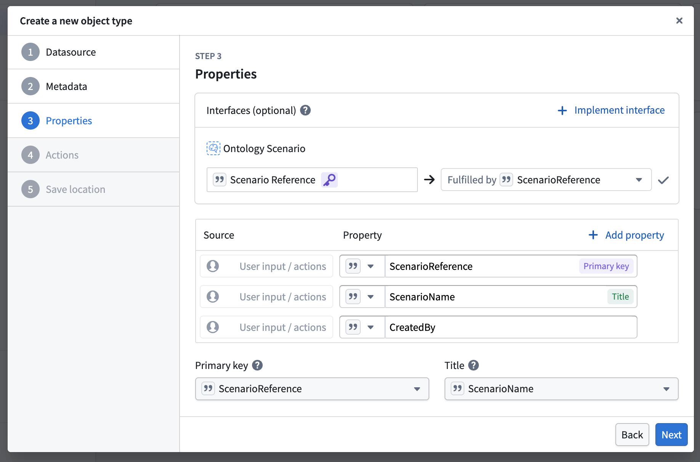
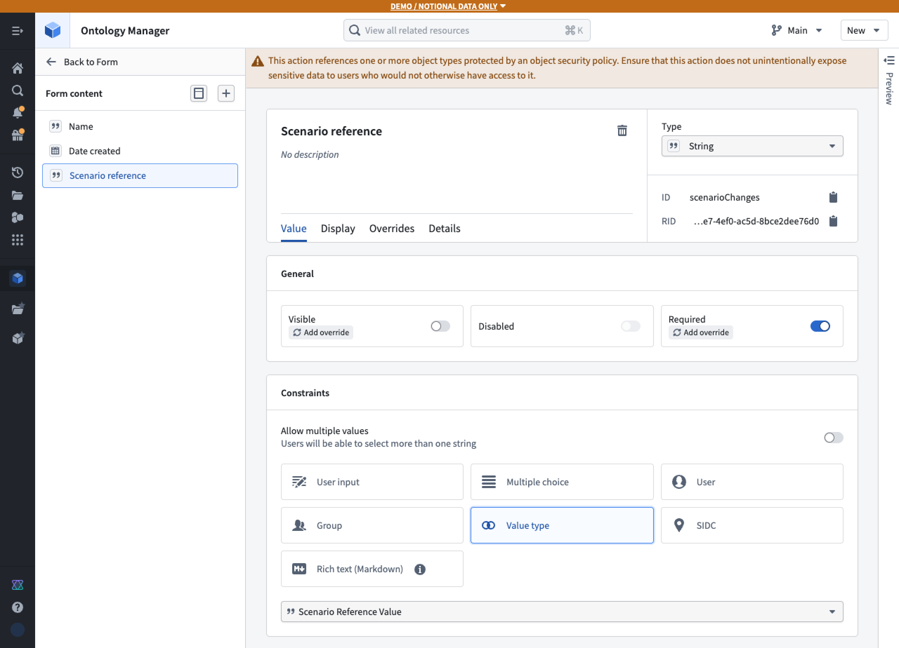
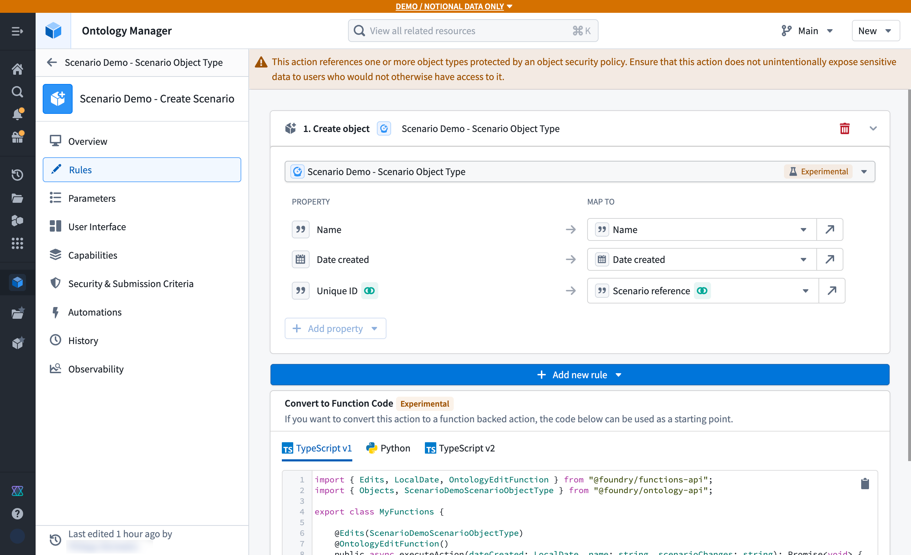
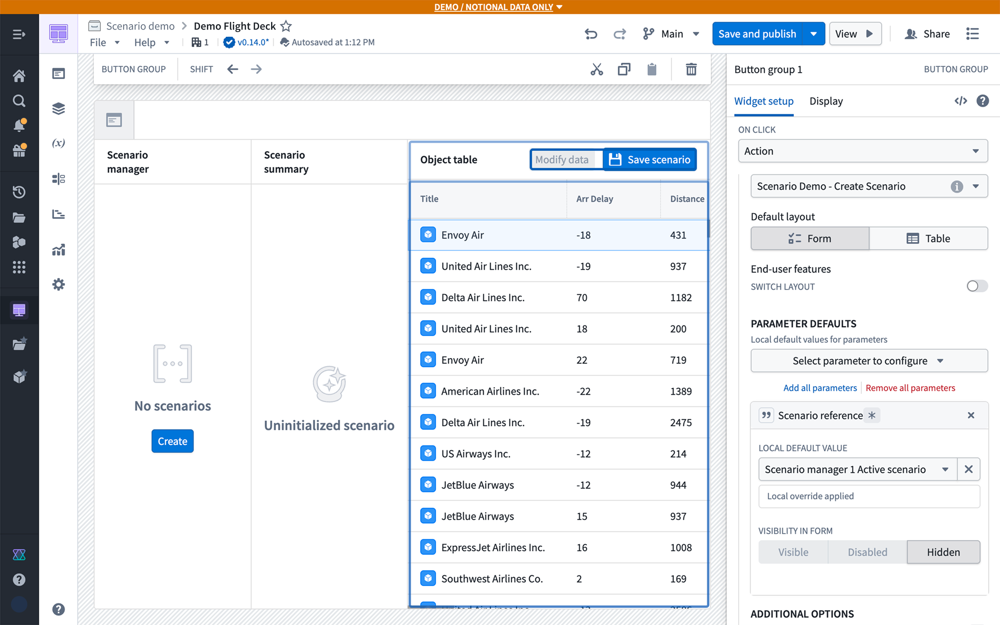
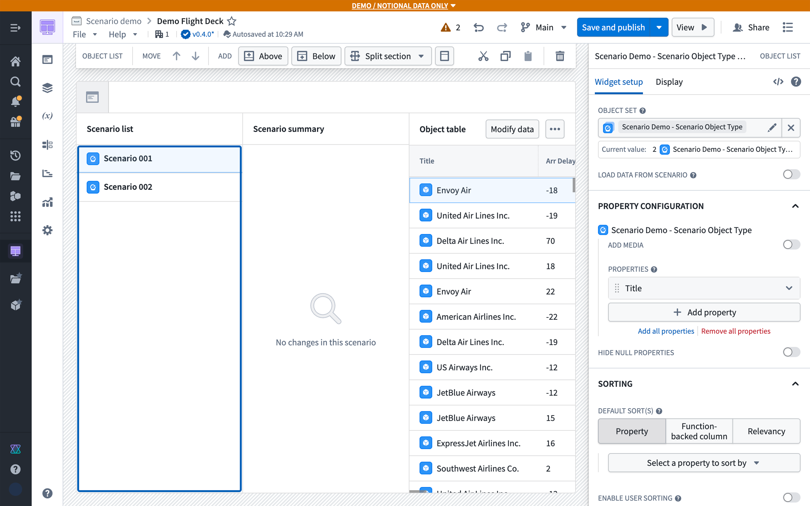
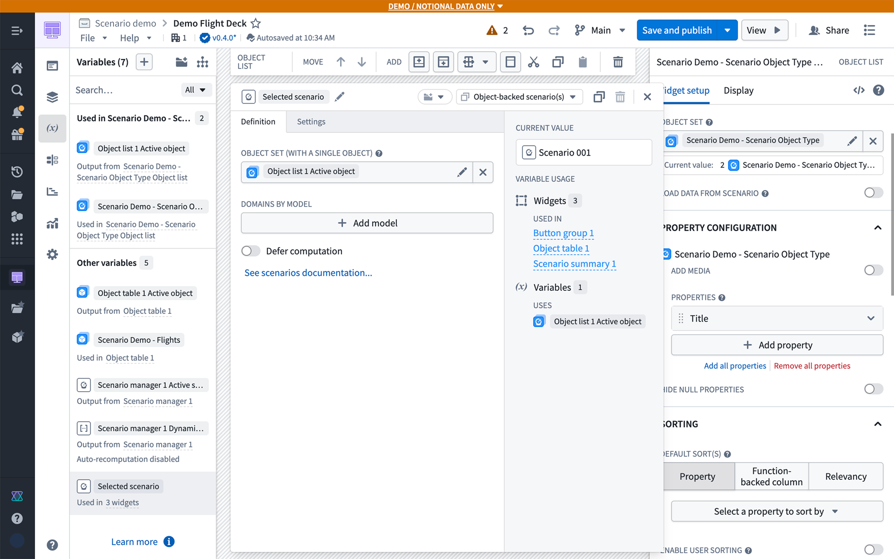
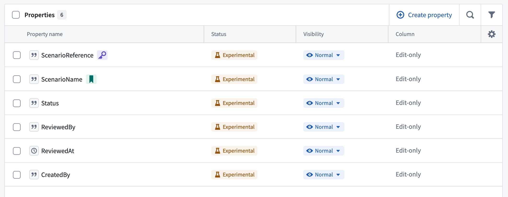
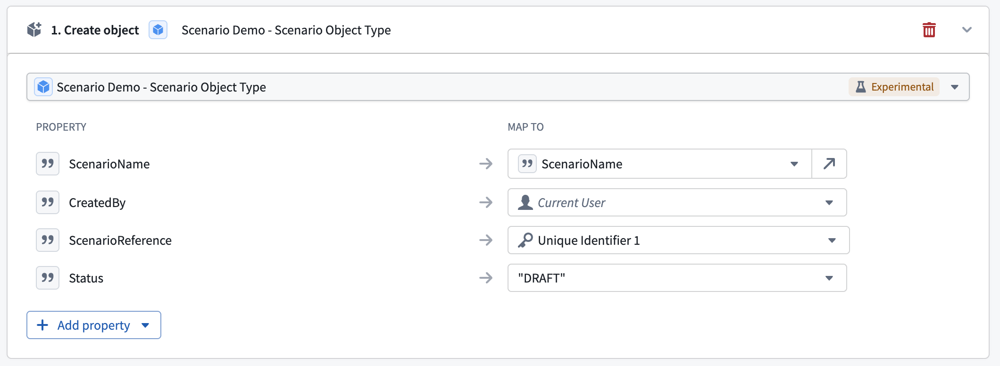
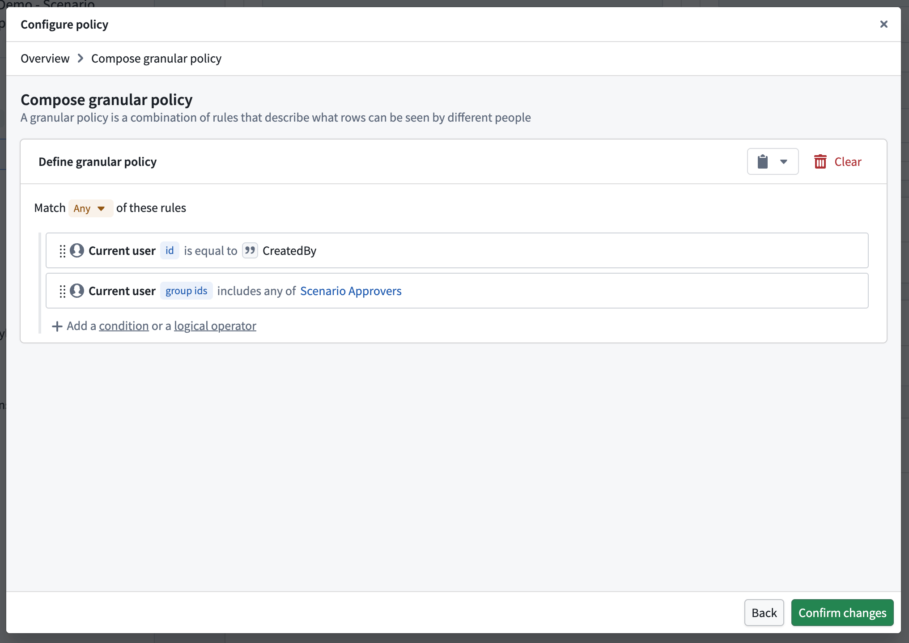

:::callout{theme="neutral" title="Beta"} Ontology scenarios are in the beta phase of development and may not be available on your enrollment. Contact Palantir Support for access to the Ontology scenario interface. :::
You can define and store metadata of a scenario in the Ontology, where each object represents a scenario, to create a persisted scenario.
When stored in the Ontology, scenarios are shareable and collaborative. Teams can compare multiple persisted scenarios side-by-side, attach rich metadata including descriptions and authorship, and link scenarios to related objects for easy organization. Persisted scenarios inherit Foundry's permissions and governance model, ensuring proper access control, and create a durable audit trail of the decision-making process.
To configure the scenario object type in Ontology Manager, follow the steps below:
In Ontology Manager, navigate to the Object types tab and select + New object type.
Follow the configuration wizard. At step 3 (Properties), choose to Add an interface, then search for the Ontology Scenario interface. Ensure that Scenario Reference is mapped to the primary key of your object type, then complete the remaining steps.

Once the new object type is created, open the Properties tab and confirm that the Primary Key property has a value type of Scenario Reference assigned to it.
Optionally, add additional properties to store metadata about the scenario, such as Created By or Description. Save the configuration and wait for the initial sync to complete.
In Ontology Manager, locate your Scenario Object Type. If you did not configure a Create Object action during the initial setup, select + New in the Action types card to create one.
Within the Create Object action configuration, add an additional parameter of type String. In the Constraints card, set the value type to Scenario Reference Value. Then disable the Visibility toggle to hide the parameter from end users.

In the Rules tab of the Action configuration page, ensure the Unique ID property is mapped to the new Scenario Reference parameter.

Before proceeding, ensure you have completed the temporary scenario configuration tutorial. Once your first temporary scenario is in place, follow these steps in Workshop:
Add a Button Group widget to your application to handle saving the scenario.
Set the button's action to the Create Object action configured on your Scenario Object Type.
In the Default Value configuration, set the Scenario Reference parameter to be populated by the Active Scenario variable generated by the Scenario Manager widget.

Make the following adjustments in Workshop to display persistent scenarios:
In the Create or Save Scenario action, the Scenario reference parameter does not require a default value; it will be auto-generated upon action execution.
Replace the Scenario Manager widget with an Object List widget (or any other object display widget) configured to list your persisted Scenario objects.
Set the Scenario Object Type as the data source for the newly added widget.

Replace the Active Scenario variable with an Object-backed scenario variable, and set its value to the Active Object from the Object List widget. You should update the variable selection in other widgets.

To control who can view and edit persisted scenarios and to govern review workflows, use object properties, object security policies, and action submission criteria. These controls are available because each persisted scenario is represented by an object.
For example, a team can configure a scenario approval workflow in which:
To do so:
Draft, In review, Approved, or Rejected.
Draft. 
When defining the policy, reference the approvals group by its stable group ID rather than by its name, so the policy is unaffected if the group is renamed. Users must also have permission to view the scenario object type definition.

| Action | Result | Submission criteria |
|---|---|---|
| Submit for review | Change Draft status to In review. |
The current user matches Created By, and the current status is Draft. |
| Approve scenario | Approve the scenario, change In review status to Approved, and optionally populate Reviewed By and Reviewed At. |
The current user's group IDs include the approvals group, and the current status is In review. |
| Reject scenario | Change In review status to Rejected, and optionally populate Reviewed By and Reviewed At. |
The current user's group IDs include the approvals group, and the current status is In review. |
Optionally, for the Approve scenario action, add an Apply Scenario rule to the action so that approval and merging the scenario occur through the same governed action.